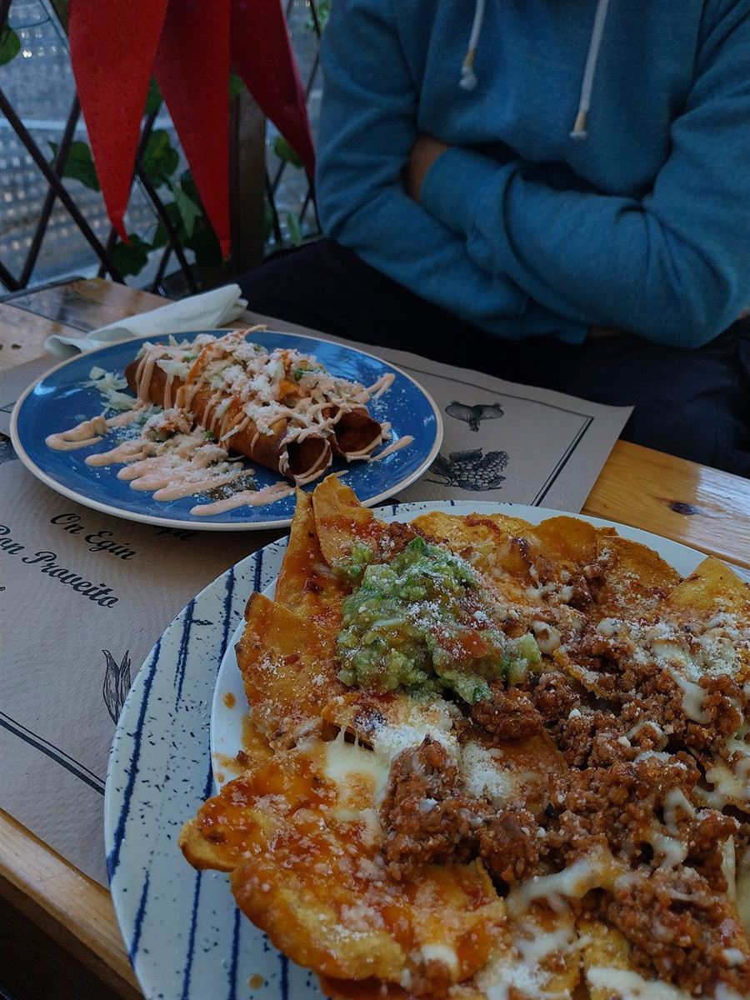
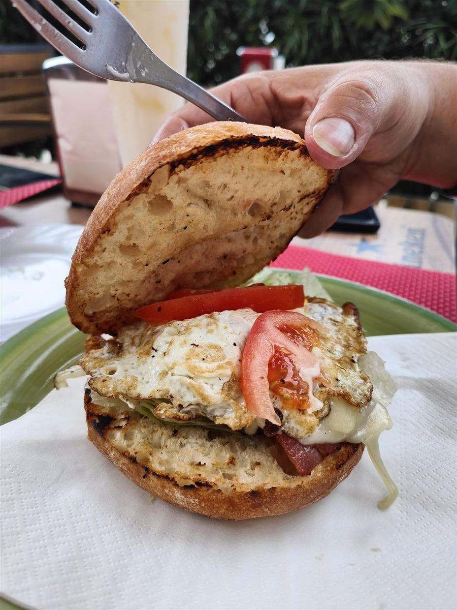
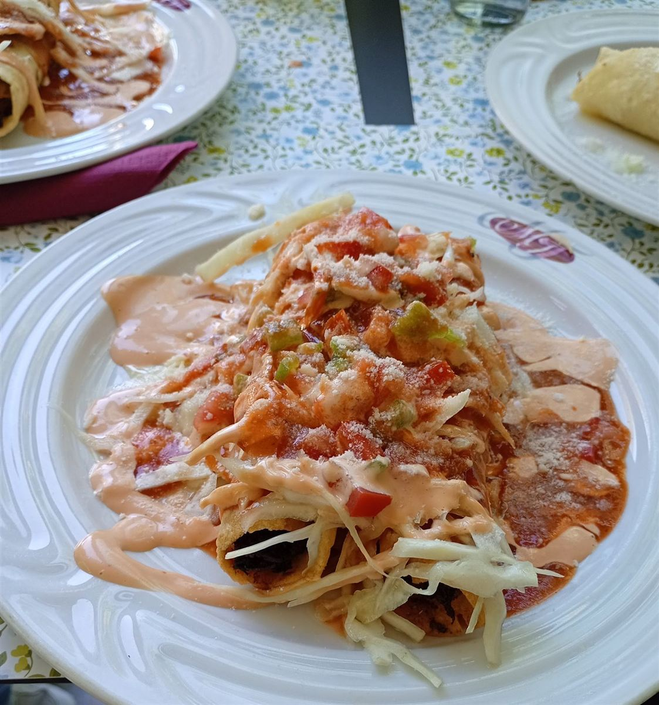
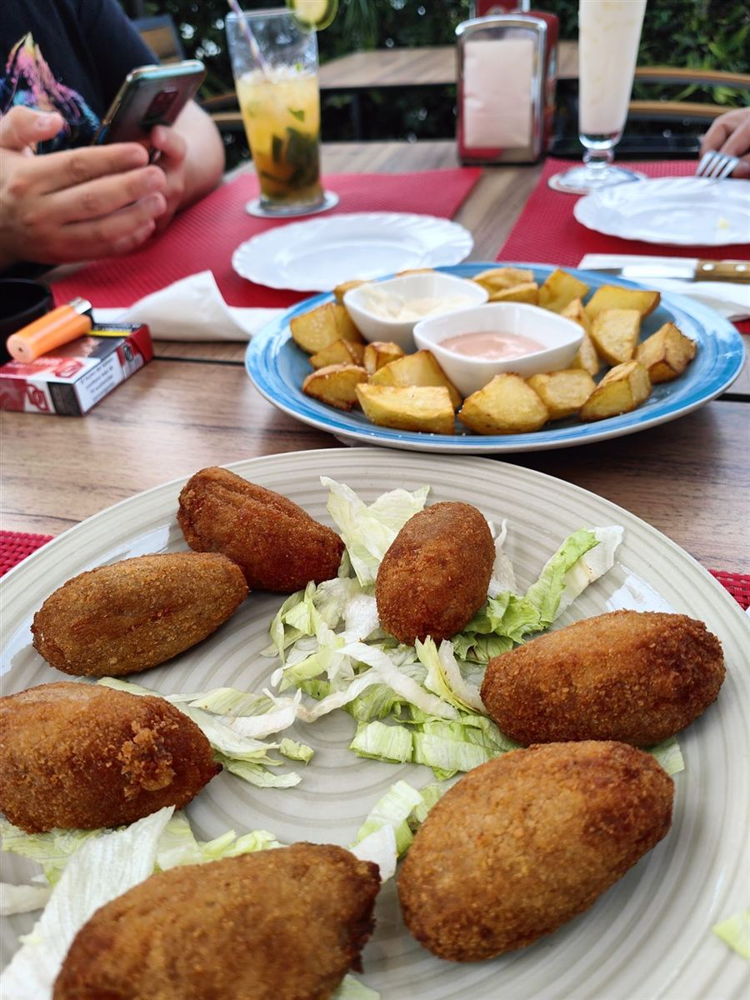
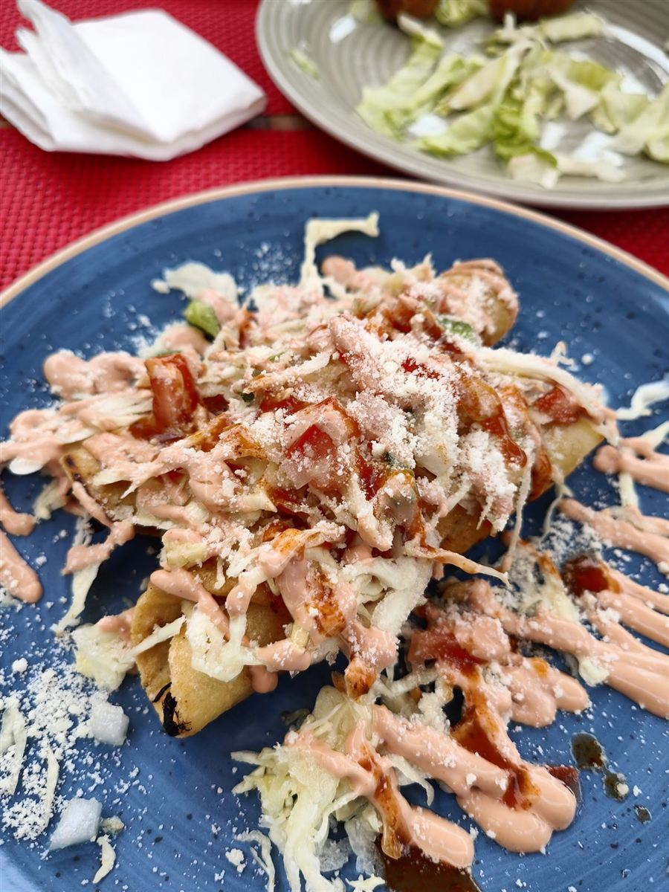
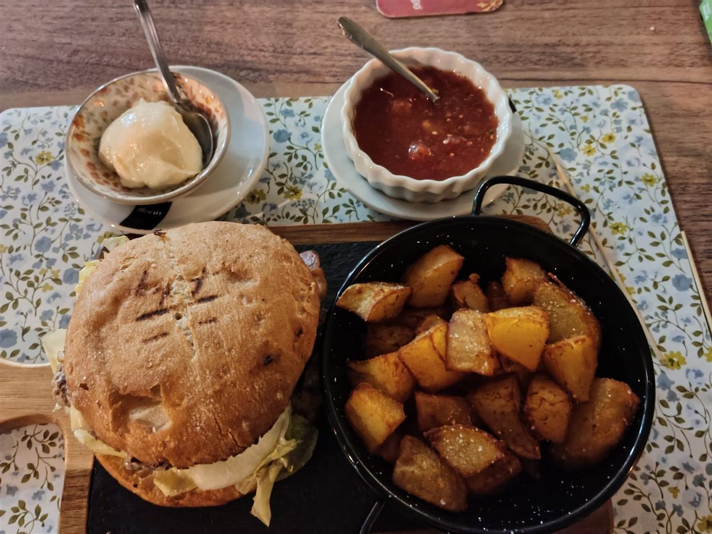
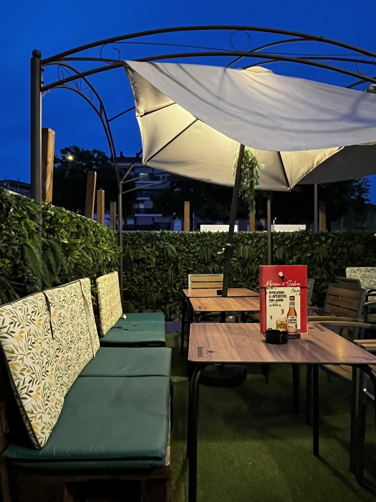
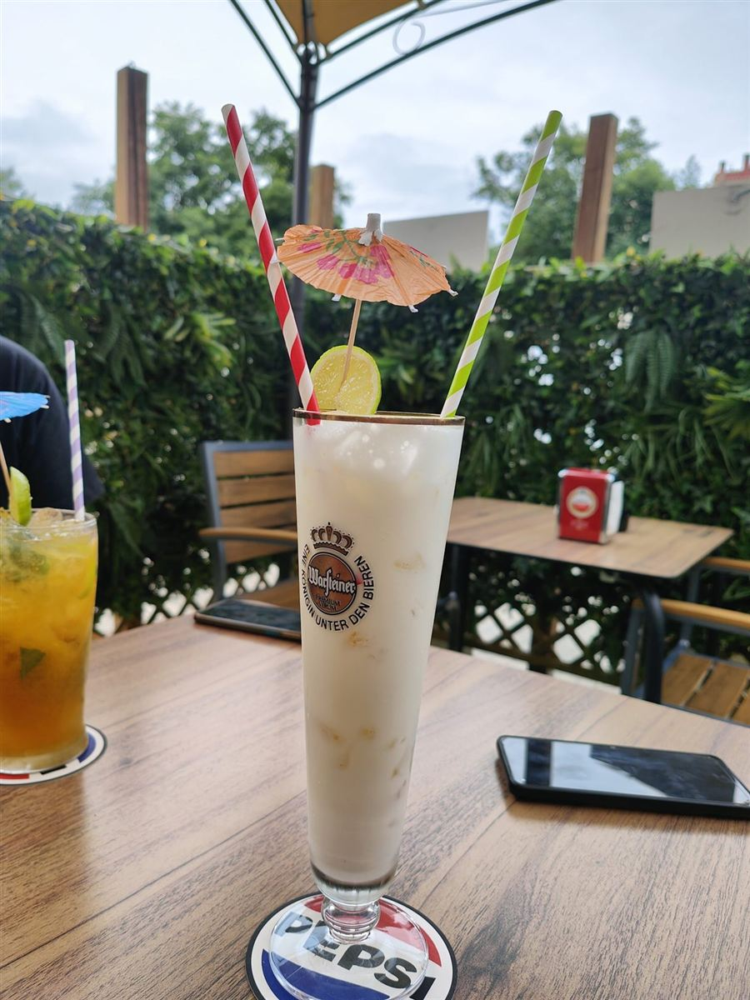

Como en CasaMirian & Salva
Pasa la mano por el terciopelo. Si pulsas, se queda escrito.
Ponte cómodo.
En casa de Mirian y Salva se come como en la tuya: platos caseros, raciones con las que nadie se queda con hambre y una terraza donde da gusto alargar la sobremesa.
- Hecho en casa
Cocina casera de verdad. Hasta los nachos.
- De muchas casas
Recetas de Honduras, Bolivia, Perú, Colombia, Cuba y México, y tapas de aquí.
- Peludos, bienvenidos
En la terraza también hay sitio para ellos.
- Hasta la 1:00
Del primer café a la última copa, de martes a domingo.
«Hasta los nachos son caseros.»






La cocina de muchas casas
Cada plato viene de la casa de alguien. Esta es nuestra pizarra latina.
¿Cuánta hambre traes?
Elige y te decimos qué pedir, como en casa.
Salteñas
5,20 €unidadBurrito
6,00 €Tacos
11,00 €Pique macho
14,00 €Lomo saltado
15,00 €Pollo chuco
15,00 €Tajadas con carne
16,00 €Ropa vieja
17,00 €Enchiladas
17,75 €Tostones
18,00 €Ceviche
19,00 €Picada colombiana
28,50 €
Y de la casa de aquí
Precios de nuestra pizarra. Pueden cambiar.

Setos, velas blancas y la última copa.
Una terraza rodeada de verde, con sombra de día. Por la noche se encienden las velas y la cosa se alarga: abrimos hasta la 1:00, que en casa nadie te echa.
«Terraza bonita y acogedora dónde además nos dejan estar con los peludos.»

«Recomendamos el mojito.»
Mojitos, piñas coladas y cócteles de la casa.
Lo que se dice en la mesa
«Una maravilla, soy cliente habitual, trato de 10, comida casera excelente, hasta los nachos son caseros... sin duda uno de mis referentes en Lloret de Mar. El equipo es genial también, os recomiendo ir, un abrazo Salva, Miriam, las maravillosas Paula y Rocío, gracias.»
«Lo encontramos de casualidad y una maravilla todo, la comida verdaderamente casera y deliciosa. La atención de 10 y los cócteles son buenísimos también. Tapas, comida latina y mucha variedad.»
«Acabamos en este local de casualidad y nos sorprendimos bastante. En la terraza se está cómodo para comer […]. Los nachos caseros y buenísimos y las flautas también igual de buenas. No te quedas con hambre […]. Con ganas de volver a repetir.»
Pásate cuando quieras.
Bueno, menos los lunes, que descansamos.
- Dónde
- Av. del Rieral, 73
17310 Lloret de Mar, Girona
Acceso para sillas de ruedas. - Teléfono
- 668 50 44 05
972 07 16 26 - Horario